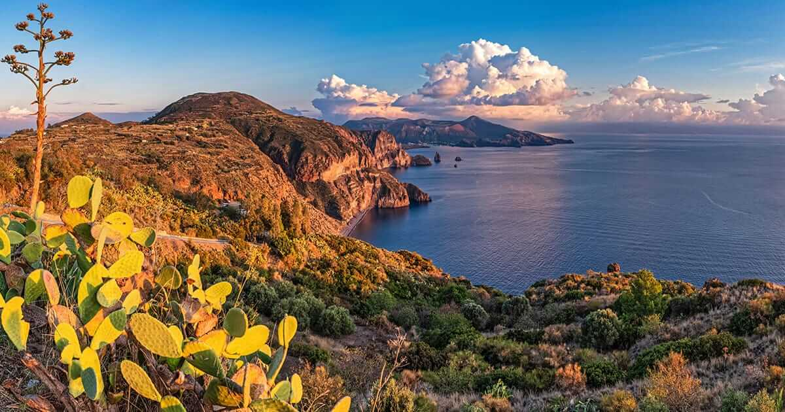
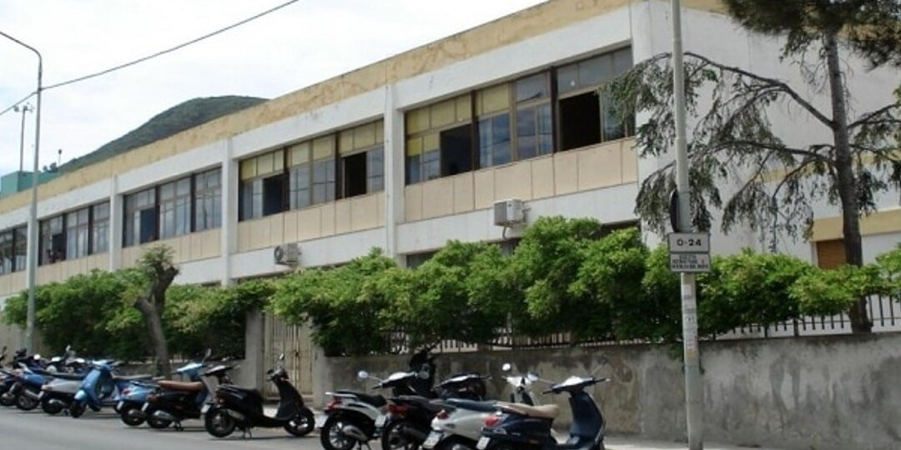
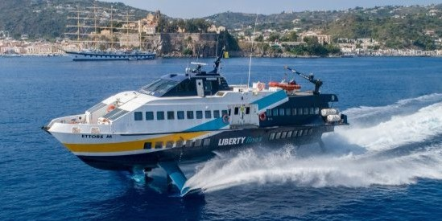

EOLIE · COMUNE DI LIPARI
LIPARI
Lipari è la maggiore delle Isole Eolie e il centro principale dell'arcipelago. Il suo territorio comunale comprende anche Vulcano, Stromboli, Panarea, Filicudi e Alicudi.
Abitanti
COMUNE
12.794
Residenti nel Comune di Lipari
ISOLA
9.000
Residenti sull'isola di Lipari

Servizi
Lipari rappresenta il principale centro di servizi dell'arcipelago e offre strutture che non sono facilmente disponibili nelle isole più piccole. Sono presenti un ospedale con pronto soccorso, farmacie, uffici postali, banche, attività commerciali e servizi amministrativi. La presenza di questi servizi rende l'isola un punto di riferimento anche per gli abitanti delle altre Eolie. Tuttavia, per alcune prestazioni specialistiche e necessità più complesse può essere necessario raggiungere la Sicilia.
Lavoro
L'economia di Lipari è fortemente legata al turismo, che offre opportunità soprattutto nei settori dell'accoglienza, della ristorazione, delle strutture ricettive e dei servizi per i visitatori. Sono presenti anche attività legate alla pesca, all'agricoltura e alla produzione di prodotti tipici. La maggior parte delle opportunità lavorative si concentra nei mesi estivi, quando l'afflusso turistico aumenta notevolmente. Questo comporta una forte stagionalità dell'occupazione e rende più difficile trovare un lavoro stabile durante tutto l'anno.
Istruzione
Lipari rappresenta il principale polo scolastico dell’arcipelago eoliano. Sono presenti scuole dell’infanzia, primarie e secondarie di primo grado. Per le scuole superiori, il riferimento è l’Istituto di Istruzione Superiore Isa Conti Eller Vainicher, che offre il liceo scientifico e percorsi tecnici ed economici. L’offerta formativa comprende anche indirizzi legati alle caratteristiche del territorio, come Trasporti e Logistica, con articolazione nautica, e Enogastronomia e ospitalità alberghiera, collegati alle attività marittime e turistiche delle isole.


Collegamenti
I collegamenti marittimi rappresentano il principale mezzo di connessione tra Lipari e la terraferma. L'isola è raggiungibile soprattutto dal porto di Milazzo attraverso traghetti e aliscafi, che permettono di spostarsi anche tra le altre isole dell'arcipelago. La mobilità quotidiana dipende però dagli orari delle corse e dalle condizioni meteorologiche. In caso di mare mosso, i collegamenti possono subire ritardi o cancellazioni, rendendo più complicati gli spostamenti per motivi di studio, lavoro e salute.